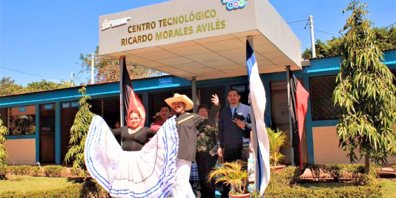
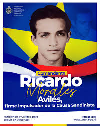
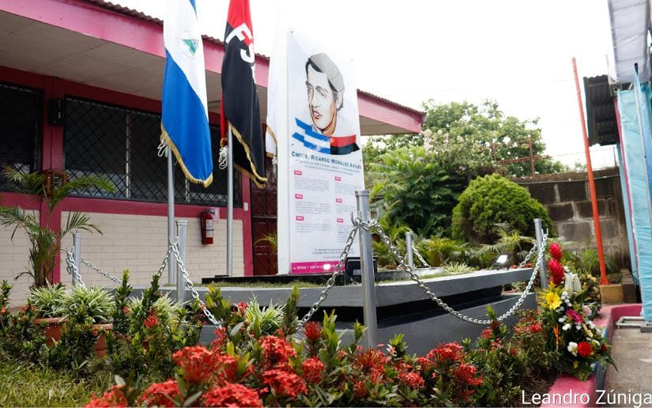

Impacto educativo
El impacto educativo de Morales Avilés se refleja en la consolidación de una cultura de estudio más analítica y menos memorística. Su insistencia en revisar fuentes, contextualizar procesos y debatir ideas fortaleció prácticas académicas orientadas al pensamiento crítico. Para muchos estudiantes y docentes, sus aportes funcionaron como puente entre la historia escrita y los dilemas del presente.
En espacios formativos, su legado se traduce en metodologías de lectura profunda, discusión razonada y compromiso con el conocimiento público. Esto contribuyó a elevar la calidad del diálogo intelectual y a formar ciudadanos capaces de argumentar con base histórica.
Impacto cultural
En el plano cultural, ayudó a reafirmar la importancia de la memoria colectiva y del patrimonio simbólico nicaragüense. Sus intervenciones pusieron en valor la relación entre literatura, historia e identidad nacional. Al destacar estas conexiones, impulsó una visión más integral de la cultura como ámbito de resistencia, creación y pertenencia.
Su trabajo también generó interés en nuevas generaciones por estudiar autores, procesos y corrientes de pensamiento local. Ese efecto multiplicador fortalece la continuidad de la tradición crítica y promueve mayor cuidado del legado histórico-cultural.
Impacto social y cívico
La influencia social de su obra aparece en la manera en que distintas comunidades interpretan temas de democracia, ciudadanía y responsabilidad histórica. Morales Avilés promovió la idea de que conocer el pasado no es un ejercicio nostálgico, sino una condición para construir futuro con mayor conciencia ética y política.
Su legado cívico se expresa en la invitación permanente al diálogo informado, al respeto por la diversidad de perspectivas y a la defensa de la educación como bien común. Estos elementos siguen siendo relevantes en contextos donde la discusión pública necesita más profundidad y menos simplificación.
Impacto global: dejó un modelo de intelectual comprometido que vinculó conocimiento, memoria y participación social para aportar a una Nicaragua más reflexiva y consciente de su historia.
Imágenes del legado e impacto


